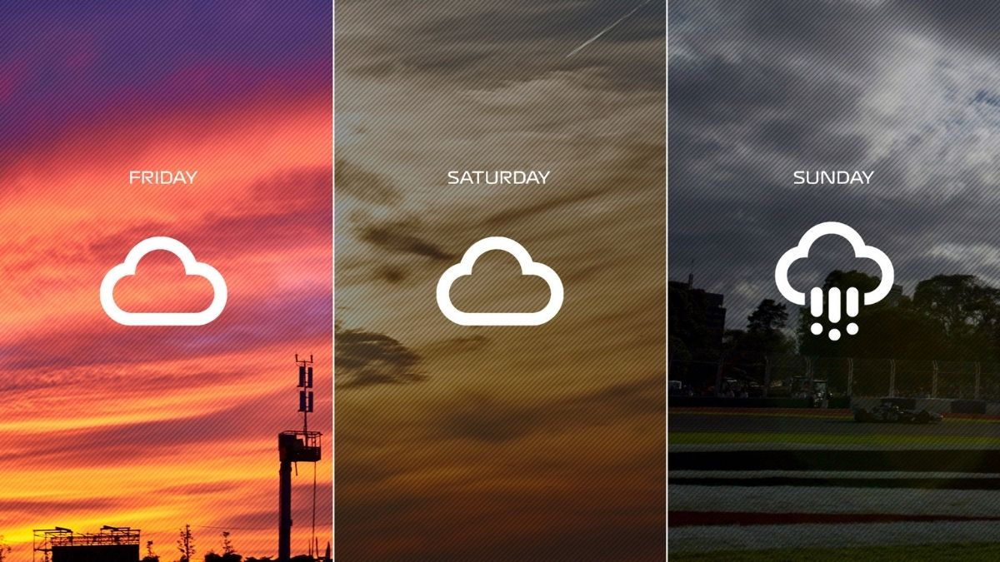

Projeler
HTML ve CSS ile Kişisel Web Site Tasarımı

HTML ve CSS kullanarak şık bir kişisel web sitesi tasarımı. Bu projede, temel HTML yapıları, stil sayfaları ve düzenleme işlemleri kullanılarak, görsel olarak çekici ve kullanıcı dostu bir site oluşturulmuştur. Web sitesinin responsif olmasına özen gösterilmiştir, böylece farklı cihazlarda rahatça görüntülenebilir.
Kişisel Blog Sitesi
Kişisel blog sitenizde yazılarınızı paylaşabilir, ziyaretçilerinizin yorum yapmasına izin verebilirsiniz. Projede, dinamik içerik yönetimi ve kullanıcı etkileşimi üzerine odaklanılmıştır. Blog yazılarını kategorize edebilir ve arama fonksiyonu ile ziyaretçilerin ilgili içeriklere hızlıca ulaşmasını sağlayabilirsiniz.
Portföy Sitesi

Portföy sitesi, kişisel projelerinizi sergileyebileceğiniz profesyonel bir platformdur. Bu projede, kullanıcının yaptığı işler ve başarıları hakkında bilgi vermek amacıyla şık ve modern bir site tasarlandı. HTML ve CSS kullanılarak oluşturulan şablonla, projelerinizi görsel olarak çekici bir şekilde sunabilirsiniz.
Online Anket Uygulaması
Bu proje, kullanıcıların çevrimiçi anketler oluşturmasına ve bu anketleri başkalarıyla paylaşmasına imkan tanır. Uygulama, yanıtları gerçek zamanlı olarak toplar ve sonuçları görselleştirir. SQL veritabanı ile anket verileri güvenli bir şekilde saklanır ve analiz edilir.
E-Ticaret Sitesi
E-ticaret sitesi, ürünlerin satıldığı, sepete ekleme, ödeme işlemleri ve sipariş takibi gibi işlevler sunan bir platformdur. Kullanıcı dostu tasarımı ve dinamik özellikleri ile online alışverişi kolaylaştırır. Kullanıcılar ürünleri kategorilere göre inceleyebilir ve arama fonksiyonu ile hızlıca istedikleri ürüne ulaşabilirler.
Hava Durumu Uygulaması

Hava durumu uygulaması, kullanıcılara güncel hava durumu verilerini sağlar. Web API'leri kullanarak anlık veriler alınır ve kullanıcı dostu bir arayüzde sunulur. Kullanıcılar şehir isimlerini girerek istedikleri yerin hava durumu bilgilerine ulaşabilirler.